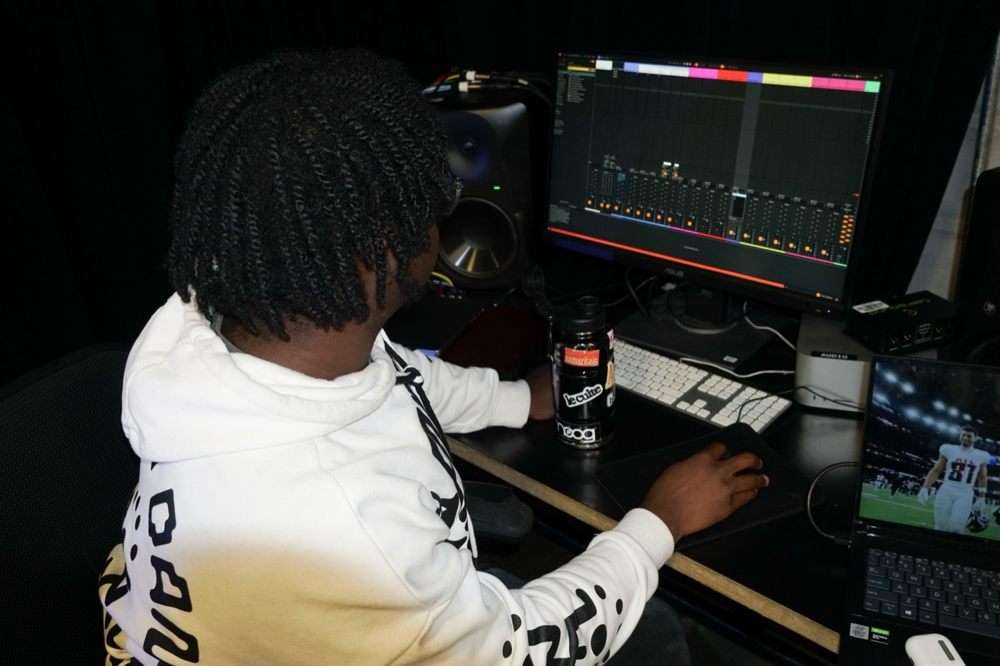
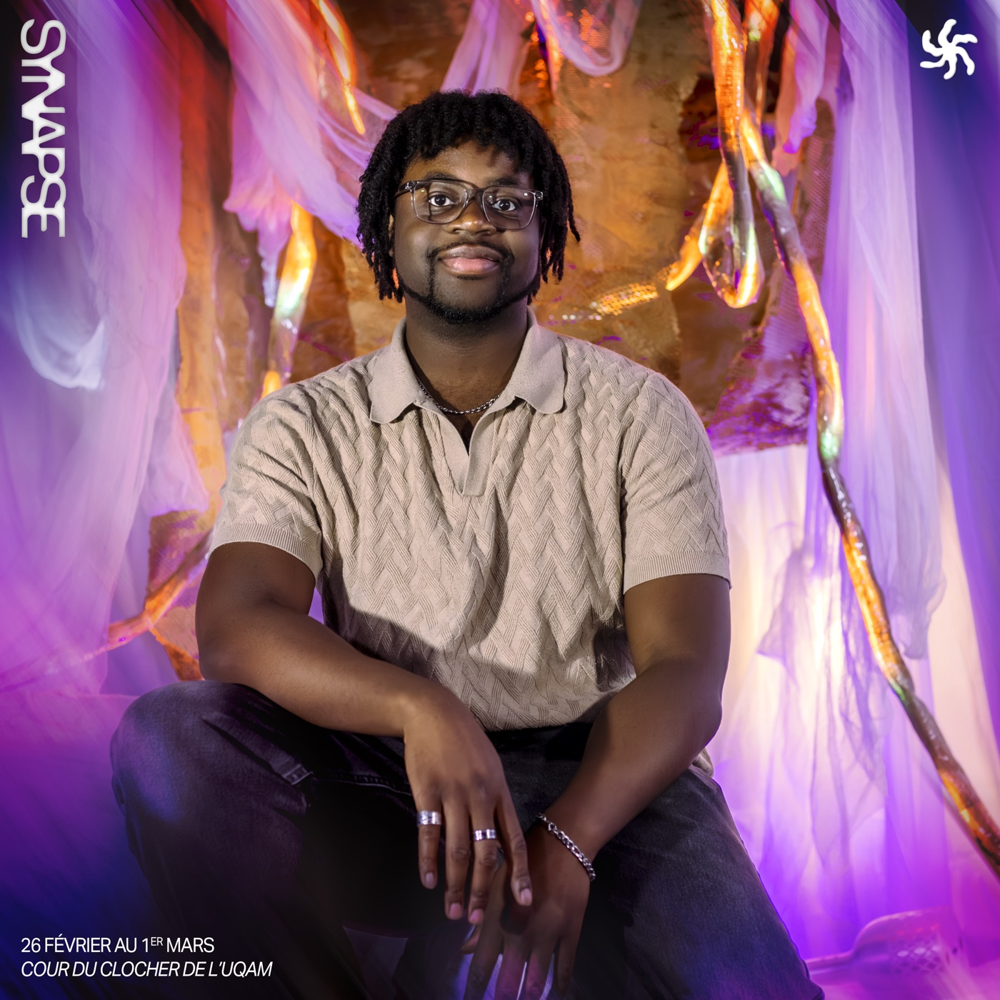
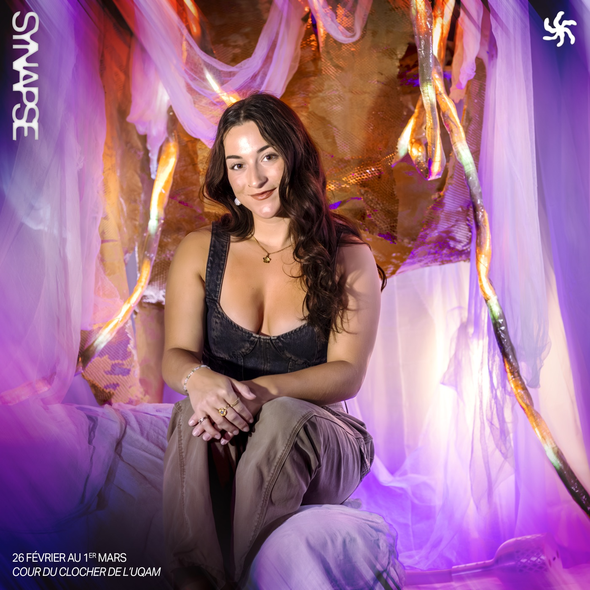
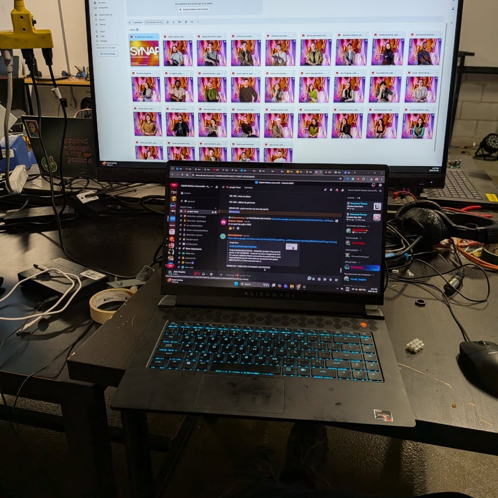

(Processus)
Du biome à la Nuit blanche
Les moments clés, du concept à la présentation publique.
-
Un réseau d'énergie
Technologie et nature se sont hybridées jusqu'à former un réseau énergétique commun, divisé en deux strates : l'Infra (mauve) et le Supra (turquoise).
Les visiteurs prennent un rhizome dans le cocon d'un des quatre nœuds, le chargent en le reliant à d'autres rhizomes, puis le branchent sur le connecteur Infra ou Supra d'un nœud. Une jauge projetée sur les murs montre en temps réel quelle strate domine.
Le système ne punit jamais et n'impose pas de 50/50 : il encourage l'écoute et la régulation plutôt que la performance.
- Saturation
La strate majoritaire : énergie élevée, visuels denses, sons puissants et rythmés.
- Absorption
La strate minoritaire : énergie faible, visuels clairsemés, sons discrets et continus.
- Appel
Sous 25 %, les nœuds de la strate en manque s'allument pour appeler les visiteurs, et ceux de l'autre strate s'atténuent.
- Symbiose
Au juste milieu, une animation se déclenche. Après une minute sans action, les deux strates acceptent leur équilibre et se fondent.


-
La voix du biome
Synapse est un univers solarpunk : un futur où la nature et la technologie ne s'opposent plus, elles s'unissent. J'imaginais donc un son naturel, organique, traversé de bruits technologiques, pour que l'on entende cette union.
Avec une équipe de deux personnes qui produisaient des sons avec moi, j'ai composé la musique et conçu l'univers sonore, puis j'en ai assuré l'intégration dans l'installation.
Synapse — conception sonore 
En studio -
Un mélange qui suit l'énergie
L'ambiance du biome mélange en continu une trame Infra et une trame Supra, dans la même proportion que la jauge. Une strate seule à 100 % joue à son volume normal ; entre les deux, elles se fondent l'une dans l'autre.
Chaque ambiance existe en deux versions : active, quand des gens ont interagi avec le biome récemment, et au repos, quand personne ne s'y est connecté depuis un moment. Si on laisse le biome tranquille, il bascule en symbiose.
Essayez : glissez la jauge, passez d'Actif à Au repos, puis ne touchez plus à rien.
Les exports finaux de l'installation, sans traitement · Mieux au casque -
Faire sonner la matière
J'ai composé les sons des nœuds et fait leur électronique. Plutôt que des haut-parleurs classiques, j'ai utilisé des transducteurs de surface : fixés à la structure, ils la font vibrer, et c'est le nœud lui-même qui sonne. Son son devient organique.
Trois sons : l'énergie qui l'habite, l'appel quand sa strate manque d'énergie, et le transfert quand un rhizome s'y connecte.
Cliquer pour écouter Première ébauche du nœud · À écouter avec le son -
Les séances photo
J'ai coordonné, avec Noémie Poirier, les séances photo de l'équipe de création qui ont servi à la promotion du projet : un portrait de chaque membre de l'équipe, devant le décor du biome.



Dans les coulisses : la sélection des portraits 
-
Dans la cour du clocher
Synapse a été présenté du 26 février au 1er mars 2026 dans la cour du clocher de l'UQAM, gratuitement et ouvert à tout le monde. Le 28 février, en partenariat avec Lumino et le Quartier des spectacles, l'installation faisait partie de la Nuit blanche, de 19 h à 1 h.

Photo : Loïc Delorme